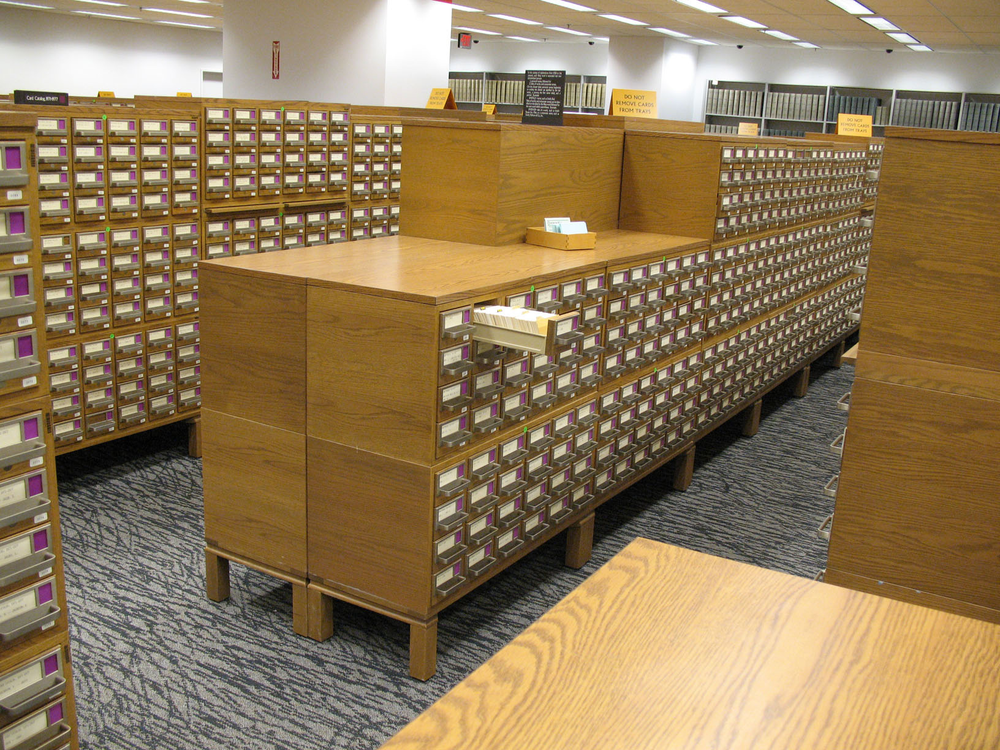
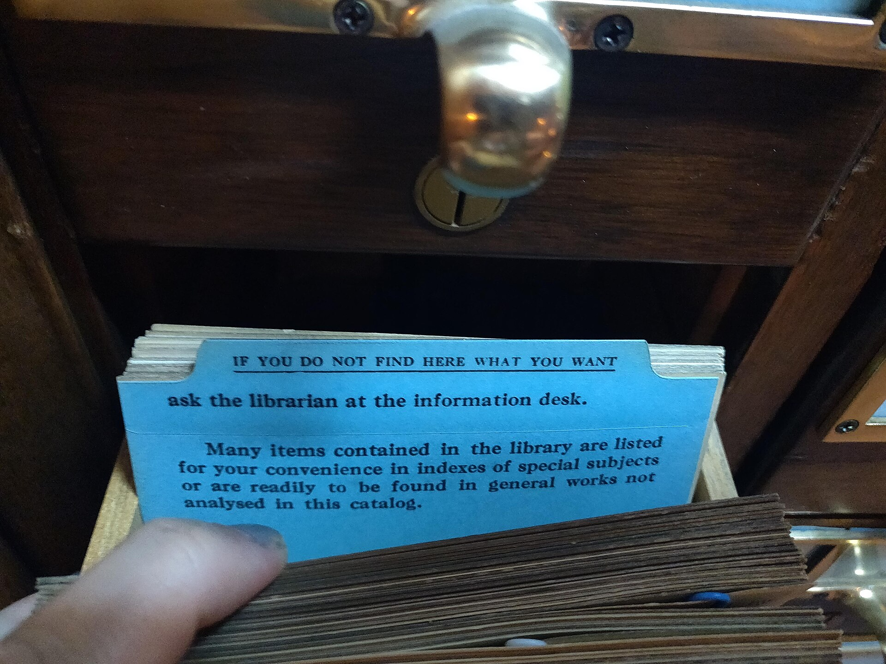

most agents do four narrow jobs

Route a request to the correct tool
Frontier prices for every request, for a job that repeats.
Narrow system prompt
Fixed instructions, given inputs.
Parse and format
The final response, every time.

Retrieve the relevant data from internal tool calls
The same lookups, over and over.

A small, repeatable slice
The underlying frontier model can write code, solve advanced mathematics and understand biology. Your agent uses a slice of that.